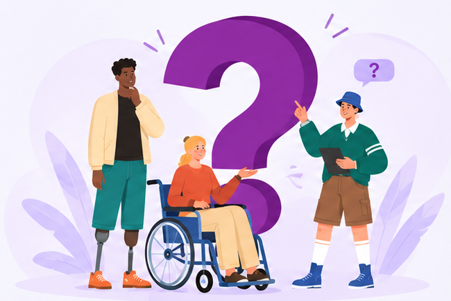

ACESSIBILIDADE
A plataforma é pensada para que todas as pessoas tenham as mesmas oportunidades.
A plataforma que conecta pessoas com deficiência às melhores vagas do mercado.
ENCONTRE OPORTUNIDADES DE TRABALHO INCLUSIVAS E CONSTRUA SUA CARREIRA COM EMPRESAS COMPROMETIDAS COM A DIVERSIDADE.
CADASTRAR-SE
A plataforma é pensada para que todas as pessoas tenham as mesmas oportunidades.
Empresas comprometidas com a diversidade e a inclusão no mercado de trabalho.
Crie seu currículo facilmente e aumente suas chances de ser encontrado.
Vagas compatíveis com seu perfil e habilidades.
PORTO FERREIRA
SALÁRIO A COMBINAR
QUERO ME CANDIDATARPORTO FERREIRA
SALÁRIO A COMBINAR
QUERO ME CANDIDATARPORTO FERREIRA
SALÁRIO A COMBINAR
QUERO ME CANDIDATARMais do que preencher cotas, contratar é dar a oportunidade para que uma vida se desenvolva com autonomia, dignidade e protagonismo.
CONECTE SUA EMPRESA À INCLUSÃOEncontre aqui as respostas para as principais perguntas sobre a plataforma Included Lives.

O Included Lives é uma plataforma que conecta pessoas com deficiência a oportunidades de trabalho inclusivas, aproximando candidatos e empresas comprometidas com a diversidade.
As empresas podem se cadastrar na plataforma, criar seu perfil, divulgar vagas inclusivas e conectar-se com talentos diversos e qualificados. Todo o processo é simples, gratuito e feito de forma online.
A plataforma reúne oportunidades de diferentes áreas e níveis de experiência, oferecidas por empresas que valorizam a inclusão e a acessibilidade.
Nosso objetivo é oferecer uma experiência acessível, com navegação clara, estrutura compatível com teclado e recursos que facilitem o uso da plataforma.
A proteção de dados pessoais é uma prioridade. Consulte a política de privacidade da plataforma para entender como suas informações são utilizadas e protegidas.
Nenhuma pergunta encontrada. Tente outro termo.